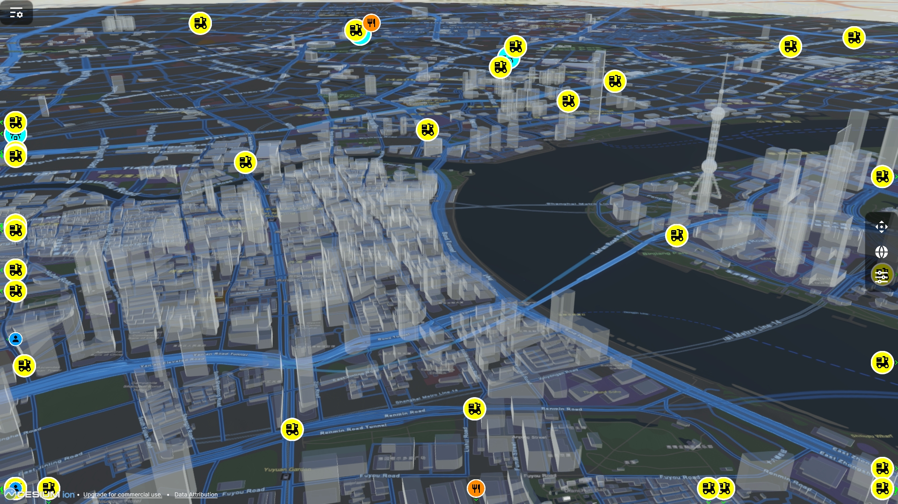

High Decision Cost
- Station siting and route design are multi-million infrastructure bets.
- Wrong siting or wind-driven route deviation creates expensive rework.
- The "build first, validate later" model amplifies financial risk.

Zero Real World Waste!
The Low-Altitude Economy Air-Ground Collaborative Delivery Digital Twin Platform
Build-first and validate-later means high capital exposure, high uncertainty, and high waste.


"Fly first, collect data later" is dead. We must see results before we spend. The era of "fly first, test later" is over. We must see outcomes before spending.
A compact view of the three core engines behind AirGroundLAB.

Scroll down to explore each module in depth (Unity + Python dual-engine architecture).
Run city-scale delivery simulations across global metropolitan regions.




Simulate UAV attitude, velocity, payload, and energy consumption changes in wind fields using high-fidelity physics engines. Achieve visual validation of flight strategies before deployment.

Integrate real city road network data and unified visualization of ground vehicle paths and low-altitude flight routes. Support cross-region and cross-city delivery network planning and bottleneck analysis.
Use large language models to simulate user reviews, schedules, ordering habits, and demographics. Build order behavior scenarios closer to realistic demand fluctuations.

Automatically complete from parameter input, simulation execution to result comparison and generate interpretable insight reports. Help teams quickly select optimal strategies and resource allocation solutions.
Initialize the experiment, load assets, and validate baseline parameters to ensure reproducible simulation conditions.